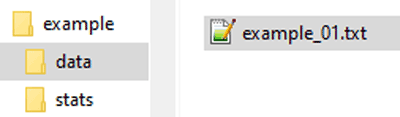
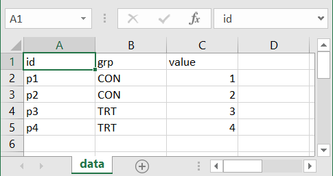
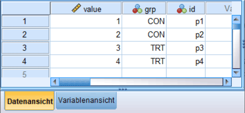

df <- readr::read_delim(
file = "data/example_01.txt",
delim = "\t"
)5 Datenverarbeitung mit tidyverse
Im Folgenden werden wir verschiedene Funktionen zur Bearbeitung und Visualisierung von Daten kennenlernen. Die verwendeten Funktionen sind alle in einer großen Sammlung von Funktionen in der Paketsammlung tidyverse zusammengefasst. Pakete aus dem tidyverse folgen alle einer einheitlichen Syntax und Idee der Datenverarbeitung. Die Pakete verfügen über eine ausgezeichnete Dokumentation. Daher werden die jeweiligen Funktionen hier nur kurz angeschnitten. Weitergehende Informationen und vor allem jede Menge Beispielanwendungen findet ihr in der tidyverse Dokumentation.
5.1 Daten in R einlesen
Um Daten von der Festplatte oder anderen Speichermedien in R einzulesen, benötigen wir spezielle Funktionen. In Abhängigkeit von der Formatierung der Daten werden unterschiedliche, spezialisierte Funktionen verwendet. Daher müssen wir uns zunächst über die Dateiformatierung im Klaren sein, um die Daten erfolgreich in R einzulesen. In R decken drei Pakete den Großteil der in Frage kommenden Dateitypen ab. Die Pakete sind readr für Textdateien, readxl für Excel-Dateien und haven für SPSS- und weitere Binärdatenformate aus anderen Statistikprogrammen.
5.1.1 readr
Im Paket readr sind eine Reihe von Funktionen enthalten, um rechteckige Textdateien einzulesen. Rechteckig bezieht sich in diesem Zusammenhang auf die Anordnung der Daten in der Datei, ähnlich einer Tabelle. Um die Daten korrekt einzulesen, ist es notwendig, die Trennzeichen (im Englischen als delimiter bezeichnet) zwischen Datenwerten zu kennen. Oft verwendete Trennzeichen sind Kommas ,, Semikolons ;, Leerzeichen oder das Einrückungszeichen TABTAB. Durch die Kombination von Daten, die jeweils durch ein Trennzeichen voneinander getrennt sind und über mehrere Zeilen verteilt sind, kommt die rechteckige Anordnung zustande.
Die flexibelste Funktion, um solche Textdateien einzulesen, ist read_delim(). read_delim() benötigt die Angabe des Trennzeichens zwischen den einzelnen Spalteneinträgen über den Parameter delim. Seien z. B. die folgenden Daten in einer Datei example_01.txt in dem Ordner data gespeichert:
id grp value
p1 CON 1
p2 CON 2
p3 TRT 3
p4 TRT 4
p1 CON 1
p2 CON 2
p3 TRT 3
p4 TRT 4
Das Trennzeichen zwischen den Einträgen ist ein TABTAB. Die Datei kann dann mittels des folgenden Befehls eingelesen werden.
Der Parameter delim="\t" spezifiziert das verwendete Trennzeichen, während file den Pfad und den Namen zur Datei angibt.
Vorsicht
Der Pfad zur Datei ist immer entweder relativ zum aktuellen Arbeitsverzeichnis (getwd()) oder absolut, z. B. C:/X/Y/Z/example_01.txt, anzugeben. Das Arbeitsverzeichnis ist das Verzeichnis, von dem R aus gerade arbeitet (In RStudio mit CTRL+SHIFT+hCTRL+SHIFT+h wechseln).
Befinden wir uns beispielsweise in einem Verzeichnis stats und müssen eine Hierarchiestufe nach oben gehen, um dann im Verzeichnis data die Datei example_01.txt einzulesen, dann können wir entweder den vollständigen Pfad benutzen oder einen relativen Pfad mit ../data/example_01.txt. Dabei bedeuten die .. eine Hierarchiestufe nach oben zu springen.

read_delim() verwendet eine Reihe von Heuristiken, um den jeweiligen Datentyp (numerisch, Zeichenkette, etc.) der Spalten zu bestimmen. Der Rückgabewert von read_delim() ist ein tibble() der Daten. In unserem Beispiel weisen wir dem tibble() den Variablennamen df zu und können somit in der weiteren Analyse mit dem Bezeichner df auf die Daten zugreifen.
df# A tibble: 4 × 3
id grp value
<chr> <chr> <dbl>
1 p1 CON 1
2 p2 CON 2
3 p3 TRT 3
4 p4 TRT 4In den Beispieldaten sind die ersten beiden Spalten als Zeichenketten (<char>) erkannt worden, während die dritte Spalte als Zahl (<dbl>) erkannt wurde. Manchmal funktioniert die automatische Erkennung der Datentypen nicht korrekt. In dem Fall können mit dem Parameter col_types die Spaltentypen direkt angegeben werden. Wenn keine Kopfzeile in den Daten vorhanden ist, kann diese über den Parameter col_names spezifiziert werden. Mit skip können Zeilen zu Beginn der Datei übersprungen werden.
Beispiel 5.1 Wollen wir zum Beispiel andere Spaltennamen haben, dann können wir die erste Zeile beim Einlesen überspringen und andere Spaltennamen angeben.
readr::read_delim(
file = 'data/example_01.txt',
delim = '\t',
skip = 1,
col_names = c('ID', 'Gruppe', 'Wert'),
col_types = 'ccd'
)# A tibble: 4 × 3
ID Gruppe Wert
<chr> <chr> <dbl>
1 p1 CON 1
2 p2 CON 2
3 p3 TRT 3
4 p4 TRT 4Wenn ihr das Paket readr vorher mit library(readr) geladen habt, ist die Qualifizierung der Funktion mit readr:: nicht notwendig, und ihr könnt direkt den Funktionsnamen verwenden. Hier überspringen wir mit skip=1 die erste Zeile in der Datei und geben mit col_names=c('ID', 'Gruppe', 'Wert') eigene Spaltennamen an und spezifizieren direkt mit col_types die Datentypen der Spalten mit c = character und d = double.
Die weiteren Funktionen in readr wie read_csv, read_tsv usw. sind in den meisten Fällen Spezialversionen von read_delim, bei denen der Parameter delim schon voreingestellt ist. Schaut euch etwas in der Dokumentation um, um einen Überblick über die verschiedenen Varianten und Funktionalitäten zu bekommen.
5.1.2 readxl
Die gleichen Daten in einer Excel-Datei können wir mit der Funktion read_xlsx() aus dem Paket readxl in R laden. Wenn die Daten die folgende Form haben:

dann können wir die Daten mit dem folgenden Befehl laden:
df <- readxl::read_xlsx(
path = 'data/example_01.xlsx',
sheet = 'data',
range = 'A1:C5'
)
df# A tibble: 4 × 3
id grp value
<chr> <chr> <dbl>
1 p1 CON 1
2 p2 CON 2
3 p3 TRT 3
4 p4 TRT 4Ähnlich wie bei read_delim() geben wir mit path den Pfad zur Datei an. Der Parameter sheet spezifiziert, aus welchem Excel-Blatt die Daten eingelesen werden sollen, während der Parameter range den Datenbereich auf dem Blatt definiert. Je nachdem, wie kompliziert eure Excel-Datei aussieht, müssen sheet und range oft gar nicht angegeben werden, da read_xlsx() auch über heuristische Regeln versucht zu erraten, welche Daten ihr einlesen wollt. Allerdings ist dies eher eine fragile Annahme, und daher ist es im Sinne einer robusten Datenanalyse zu empfehlen, beide Parameter immer anzugeben und sicherzugehen, dass auch wirklich die gewollten Daten eingelesen werden.
Hinweis
Beim Parameter range darauf achten, dass dieser bei Veränderung der Excel-Datei, z. B. wenn neue Daten dazukommen, entsprechend angepasst wird.
5.1.3 haven
Im Paket haven haben wir Funktionen, um mit SPSS-Dateien (siehe Abbildung 5.2) zu arbeiten.

Die Funktionen funktionieren zum Glück selbst, wenn SPSS auf dem Rechner nicht installiert ist. Allerdings kann hier nicht nachkontrolliert werden, ob das Einlesen korrekt stattgefunden hat, wenn keine Dokumentation zu den Daten vorhanden ist. In SPSS werden Dateien üblicherweise in einem binären sav-Dateicontainer gespeichert. In R können die Daten mittels der Funktion read_sav() aus dem Paket haven eingelesen werden.
df <- haven::read_sav('data/example_01.sav')
df# A tibble: 4 × 3
value grp id
<dbl> <dbl+lbl> <dbl+lbl>
1 1 1 [CON] 1 [p1]
2 2 1 [CON] 2 [p2]
3 3 2 [TRT] 3 [p3]
4 4 2 [TRT] 4 [p4] Da SPSS eigene Datentypen, insbesondere im Zusammenhang mit nominalen bzw. ordinalen Variablen, hat, sind im Paket haven spezielle Datentypen definiert. Im Beispiel hier ersichtlich am Datentyp für grp mit <dbl+lbl>. Es handelt sich hier um den Datentyp labelled. In der Dokumentation von read_sav() gibt es hierzu weitere Informationen.
Tipp
Mit der Funktion as_factor() aus dem Paket haven können die labelled Daten in den R-Datentyp factor umgewandelt werden.
Wenn wir die Daten in R eingelesen haben, können wir nun als nächstes die Daten verarbeiten und so strukturieren, wie wir sie für die weitere Analyse benötigen. Dazu stehen uns eine Reihe von weiteren Funktionen aus dem tidyverse zur Verfügung.
5.2 Daten in R prozessieren mit tidyverse
Die Art der Programmierung im tidyverse verwendet oft eine eigene Herangehensweise, die sich von derjenigen, die wir bisher kennengelernt haben, etwas unterscheidet. Um den Code leserlich zu halten, werden mehrere Funktionen in sogenannten pipes aneinandergehängt, ohne zwischendrin temporäre Variablen zu erstellen. Dies führt zu Code, der fast wie Prosa gelesen werden kann. Dazu müssen wir aber zunächst einen neuen Operator kennenlernen.
5.2.1 Der Pipe-Operator |>
In R gibt es den sogenannten Pipe-Operator |>. Der |> hat die Eigenschaft, dass ein vorangestellter Wert (dies kann auch der Rückgabewert einer Funktion sein) als das erste Argument an eine nachfolgende Funktion übergeben wird. Dies ermöglicht es, Code zu schreiben, der sich wie gesprochener Text liest. Schauen wir uns ein einfaches Beispiel an. Wir wollen den Mittelwert eines Zahlenvektors berechnen und anschließend das Ergebnis auf die zweite Nachkommastelle runden. Normalerweise würden wir das wie folgt formulieren, wenn wir keine Zwischenvariablen definieren wollen.
vec <- c(1, 7, 3, -5.22, 5, 6.3)
round(mean(vec), 2)[1] 2.85D. h. wir haben eine Schachtelung (nesting) der Funktionen. Die mean()-Funktion ist innerhalb der round()-Funktion geschachtelt, bzw. der Rückgabewert von mean() wird als erstes Argument an round() übergeben. Schauen wir uns nun an, wie wir das gleiche Programm mit dem Pipe-Operator |> formulieren.
vec |> mean() |> round(2)[1] 2.85Was ist hier passiert? Die erste Pipe |> übergibt ihr links stehendes Argument, den Vektor vec, an das erste Argument der rechts stehenden Funktion mean(). Aus vec |> mean() wird mean(vec). mean() ist zufrieden und berechnet den Mittelwert des Vektors, der nun als Rückgabewert zur Verfügung steht. Der zweite Pipe-Operator nimmt nun wieder diesen linken Wert, den berechneten Mittelwert, und übergibt diesen an das erste Argument der nachfolgenden round(2)-Funktion. Wenn ihr euch die Hilfe von round() anschaut, dann seht ihr, dass der erste Parameter der zu rundende Wert ist. Was macht jetzt aber die 2 in round(2)? Nun, |> stellt den links stehenden Wert an die erste Stelle der rechts stehenden Funktion, dadurch rutscht die 2 an die zweite Argumentstelle in round() und bestimmt somit die Anzahl der zu rundenden Stellen.
Der Vorteil des Pipe-Operators ist, dass ihr das Programm nun einfach von links nach rechts lesen könnt: Nimm vec, stecke es in mean(), und stecke das, was rauskommt, in round(2). Bei dem ursprünglichen Programm musstet ihr euch von innen nach außen arbeiten und dabei immer im Blick behalten, auf welcher Stufe ihr seid, um die Parameterzuordnung richtig interpretieren zu können.
Noch ein Beispiel: Wir wollen den Mittelwert auf den Absolutwerten des Vektors berechnen. Nach der Standardmethode:
round(mean(abs(vec)), 2)[1] 4.59Mit dem Pipe-Operator:
vec |> abs() |> mean() |> round(2)[1] 4.59Wenn die Pipe anfängt, zu lang zu werden, dann hat es sich eingebürgert, nach der Pipe eine neue Zeile anzufangen.
vec |> abs() |>
mean() |> round(2)[1] 4.59Der Pipe-Operator |> ist so alltäglich, dass ihr in RStudio einen Shortcut für ihn habt: STRG+SHIFT+mSTRG+SHIFT+m.
Bei der Verwendung der Pipe nicht vergessen, das Ergebnis der Pipe dann letztendlich doch wieder einer Variable zuzuweisen. Ansonsten berechnet R den Wert und schmeißt ihn gleich wieder weg.
[1] 4.59Der Pipe-Operator |> ist im alltäglichen Umgang mit Datenprozessierung im Zusammenhang mit tidyverse praktisch unabkömmlich, und praktisch jegliche Codeschnipsel, die ihr im Netz dazu findet, verwenden Pipes. Tatsächlich ist die dahinterliegende Idee in der Informatik (siehe Kernighan und Pike 1984) schon relativ lange bekannt. Die darüberliegende Idee ist nämlich: Anstatt große, komplizierte Funktionen zu schreiben, die eine Vielzahl von Argumenten haben und mehrere unterschiedliche Aufgaben erledigen, werden lieber viele kleine, spezialisierte Programme erstellt. Die spezialisierten Programme können dann zusammengesetzt werden, um komplizierte Aufgaben zu erfüllen. Der Pipe-Operator ist dabei zentral für diese Idee, da er es ermöglicht, die spezialisierten, kleinen Programme einfach aneinander zu hängen. Ähnlich wie bei einem Kinderwasserspielzeug mit Rohren, Schaufeln und Filtern können durch Umordnung der Einzelfunktionen beliebig komplexe Mechanismen abgebildet werden. Unter Linux bash ist daher auch ein Pipe-Operator | zu finden.
Nach diesem Ausflug zurück zur Datenbearbeitung mit dem tidyverse. Um die Daten möglichst einfach mit dem tidyverse verarbeiten zu können, sollten die Daten im tibble() einer bestimmten Struktur folgen. Im tidyverse wird diese Anordnung als tidy-Data bezeichnet.
5.2.2 Tidy-Data
Zu tidy-Data gibt es in der einfachsten Form nur drei Regeln, die zu beachten sind:
- Jede Spalte ist eine Variable.
- Jede Zeile ist eine Beobachtung.
- Jede Zelle ist ein einzelner Eintrag.
Schauen wir uns wieder ein einfaches, fiktives Beispiel mit Sprunghöhen an.
df <- tibble(
time = rep(c('pre', 'post'), 4),
gender = rep(c('m', 'f'), each = 4),
age = rep(round(runif(4, 20, 40)), each = 2),
cmj = round(rnorm(8, c(25, 20), 2), 1)
)
df# A tibble: 8 × 4
time gender age cmj
<chr> <chr> <dbl> <dbl>
1 pre m 27 27.6
2 post m 27 21.6
3 pre m 25 23.7
4 post m 25 22.9
5 pre f 36 24.2
6 post f 36 21
7 pre f 36 24.2
8 post f 36 23.6Wir haben vier Spalten: time, gender, age und cmj, die jeweils eine Variable darstellen. In jeder Zeile ist eine Beobachtung eine Sprunghöhe cmj einer Person eines Alters age und gender zu einem bestimmten Zeitpunkt time. Schaut also tidy aus.
Diese Darstellung ist aber wahrscheinlich unterschiedlich zu derjenigen, wie ihr solche Daten schon öfter gesehen habt. Wahrscheinlich nämlich eher so:
# A tibble: 3 × 4
gender age pre post
<chr> <dbl> <list> <list>
1 m 27 <dbl [1]> <dbl [1]>
2 m 25 <dbl [1]> <dbl [1]>
3 f 36 <dbl [2]> <dbl [2]>Diese Darstellung ist zwar kompakter, entspricht aber nicht mehr den tidy-Anforderungen, da wir nun nicht mehr nur eine Beobachtung pro Zeile haben. Wir haben für jede Person die Sprunghöhe zu zwei Zeitpunkten in einer Zeile. Die Daten sind in dieser Darstellung also untidy. Die tidy-Version ist etwas länger und enthält redundante Informationen, aber wir werden im Folgenden sehen, dass diese Darstellung in der Verarbeitung zahlreiche Vorteile hat. Dazu werden wir auch Funktionen kennenlernen, mit denen wir zwischen diesen beiden Formaten hin- und herwechseln können. Die tidy-Darstellung wird als Long-Format bezeichnet, während die untidy-Darstellung als Wide-Format bezeichnet wird.
5.2.3 filter()
Lernen wir jetzt unseren ersten tidyverse-Befehl zur Datenmanipulation kennen. Die Befehle werden als Verben bezeichnet, und die Regel für die Funktionsnamen ist zum Glück ziemlich einfach: “Was im Namen draufsteht, ist auch in der Packung drin.” Der Befehl filter filtert Daten, d. h. wir geben einen Sack Daten rein und wollen nur einen Teil wieder herausbekommen, der bestimmte Eigenschaften hat. Dazu können wir einfache Regeln mittels der Vergleichsoperatoren in filter() zusammen mit den Spaltennamen im tibble() verwenden. Wollen wir aus unserem Datensatz nur alle weiblichen Datenpunkte herausfiltern, und wir wissen, dass die Information über das Geschlecht in der Spalte gender steht und mit f für weiblich kodiert ist, dann können wir mit dem Vergleich gender == 'f' die Daten entsprechend filtern.
df |> filter(gender == 'f')# A tibble: 4 × 4
time gender age cmj
<chr> <chr> <dbl> <dbl>
1 pre f 36 24.2
2 post f 36 21
3 pre f 36 24.2
4 post f 36 23.6Wollen wir dagegen auf das Alter mit age < 30 filtern, verwenden wir:
df |> filter(age < 30)# A tibble: 4 × 4
time gender age cmj
<chr> <chr> <dbl> <dbl>
1 pre m 27 27.6
2 post m 27 21.6
3 pre m 25 23.7
4 post m 25 22.9Wenn die Daten mehrere Bedingungen erfüllen müssen, verwenden wir entsprechend mehrere Filteranweisungen. Die Vergleiche werden intern mittels einer Und-Operation zusammengesetzt.
df |> filter(age < 25, gender == 'f')# A tibble: 0 × 4
# ℹ 4 variables: time <chr>, gender <chr>, age <dbl>, cmj <dbl>filter() gibt uns in diesem Beispiel also alle Datenpunkte zurück, bei denen age < 25 und gender == 'f' gilt. Durch die Kombination von mehreren Vergleichen können relativ einfach komplexe Bedingungen formuliert werden.
Tipp
Manchmal möchten wir nur alle vollständigen Zeilen aus einem Datensatz
weiterverwenden. Dies könnten wir mit filter() erreichen, dazu müssten wir aber für jede Spalte einen Vergleich mit is.na() schreiben, wenn die fehlenden Werte NA über mehrere Spalten verteilt sind. Schneller geht dies mit dem Befehl drop_na().
df_missing <- tibble(x = 1:4, y = c(11, NA, 13, 14), z = c(21, 22, 23, NA))
df_missing# A tibble: 4 × 3
x y z
<int> <dbl> <dbl>
1 1 11 21
2 2 NA 22
3 3 13 23
4 4 14 NAdf_missing |> drop_na()# A tibble: 2 × 3
x y z
<int> <dbl> <dbl>
1 1 11 21
2 3 13 23Insgesamt führt filter() in den meisten Fällen dazu, dass wir ein tibble mit weniger Zeilen als ursprünglich erhalten.
5.2.4 select()
Das nächste Verb aus dem tidyverse ist select(). Mit select() können wir einzelne Variablen/Spalten aus einem tibble() selektieren. Wollen wir zum Beispiel aus unserem Datensatz nur die beiden Spalten time und gender auswählen, dann können wir dies mit select() wie folgt formulieren:
df |> select(time, gender)# A tibble: 8 × 2
time gender
<chr> <chr>
1 pre m
2 post m
3 pre m
4 post m
5 pre f
6 post f
7 pre f
8 post f Der Rückgabewert von select() ist entsprechend ein tibble, das nur die selektierten Spalten enthält. Ähnlich wie das auch bei der Indexierung von Elementen in Vektoren funktioniert, versteht select() auch eine Ausschlusssyntax mit -. Wollen wir z. B. alle Spalten außer gender auswählen, formulieren wir dies wie folgt:
df |> select(-gender)# A tibble: 8 × 3
time age cmj
<chr> <dbl> <dbl>
1 pre 27 27.6
2 post 27 21.6
3 pre 25 23.7
4 post 25 22.9
5 pre 36 24.2
6 post 36 21
7 pre 36 24.2
8 post 36 23.6Beispiel 5.2 Da wir jetzt schon zwei Verben kennen, können wir auch direkt sehen, wie wir durch die Kombination der Befehle komplexere Anweisungen relativ einfach in Code übersetzen können. Wollen wir zum Beispiel alle Datenpunkte von Frauen, die älter als 28 sind, verwenden und brauchen dann die gender-Variable nicht mehr, können wir dies wie folgt übersetzen:
df |> filter(gender == 'f', age > 27) |> select(-gender)# A tibble: 4 × 3
time age cmj
<chr> <dbl> <dbl>
1 pre 36 24.2
2 post 36 21
3 pre 36 24.2
4 post 36 23.6Insgesamt führt select() dazu, dass wir ein tibble erhalten, das weniger Spalten als ursprünglich enthält.
5.2.5 mutate()
In den beiden vorhergehenden Fällen haben wir die Daten nicht wirklich verändert, sondern entweder nur bestimmte Fälle mit filter() oder bestimmte Variablen mit select() ausgewählt. Oft kommt es aber vor, dass wir aus den bestehenden Daten neue Daten erstellen wollen. Um neue Daten zu berechnen, verwenden wir im tidyverse das Verb mutate().
In unserem Datensatz liegen die Sprunghöhen in Zentimetern vor, wir benötigen aber für weitere Berechnungen die Sprunghöhen in Metern. Dazu wollen wir eine neue Spalte erstellen, die wir, um sie von der anderen Spalte abzugrenzen, mit cmj_m bezeichnen wollen. Dazu setzen wir mutate() wie folgt ein:
df |> mutate(cmj_m = cmj / 100)# A tibble: 8 × 5
time gender age cmj cmj_m
<chr> <chr> <dbl> <dbl> <dbl>
1 pre m 27 27.6 0.276
2 post m 27 21.6 0.216
3 pre m 25 23.7 0.237
4 post m 25 22.9 0.229
5 pre f 36 24.2 0.242
6 post f 36 21 0.21
7 pre f 36 24.2 0.242
8 post f 36 23.6 0.236Wir sehen, dass eine neue Spalte in dem tibble erstellt wurde, eben mit dem Namen cmj_m.
Warnung
mutate() verhindert nicht, Variablen mit neuen Werten zu überschreiben. Würden wir die Sprunghöhen in Zentimetern später nicht mehr benötigen, könnten wir die Spalte cmj auch überschreiben.
df |> mutate(cmj = cmj / 100)# A tibble: 8 × 4
time gender age cmj
<chr> <chr> <dbl> <dbl>
1 pre m 27 0.276
2 post m 27 0.216
3 pre m 25 0.237
4 post m 25 0.229
5 pre f 36 0.242
6 post f 36 0.21
7 pre f 36 0.242
8 post f 36 0.236Der große Vorteil von mutate() ist hier auch wieder, dass wir direkt auf die Spaltennamen zugreifen können und nicht wie sonst notwendig den $-Operator.
Durch mutate() werden insgesamt also zusätzliche Spalten an das ursprüngliche tibble angehängt.
Beispiel 5.3 Aufbauend auf dem Beispiel von eben: Wollen wir zum Beispiel die Spalte mit den Sprunghöhen nicht beibehalten, aber einen neuen Namen verwenden, damit wir später nachvollziehen können, dass wir die Sprunghöhen bearbeitet haben, könnten wir wieder mit einer Kombination der Verben mutate() und select() in einer Pipe vorgehen:
df |> mutate(cmj_m = cmj / 100) |> select(-cmj)# A tibble: 8 × 4
time gender age cmj_m
<chr> <chr> <dbl> <dbl>
1 pre m 27 0.276
2 post m 27 0.216
3 pre m 25 0.237
4 post m 25 0.229
5 pre f 36 0.242
6 post f 36 0.21
7 pre f 36 0.242
8 post f 36 0.2365.2.6 summarize()
Mit der summarize()-Funktion werden alle Beobachtungen (Zeilen) in eine Zeile zusammengefasst. Wollen wir zum Beispiel die durchschnittliche Sprunghöhe über alle Beobachtungen berechnen:
df |> summarize(cmj_bar = mean(cmj))# A tibble: 1 × 1
cmj_bar
<dbl>
1 23.6summarize() kann auch mehrere Werte berechnen:
df |> summarize(cmj_bar = mean(cmj), age_bar = mean(age))# A tibble: 1 × 2
cmj_bar age_bar
<dbl> <dbl>
1 23.6 315.2.7 group_by()
Die summarize()-Funktion wird tatsächlich erst richtig mächtig im Zusammenhang mit der group_by()-Funktion. Mit group_by() kann ein Datensatz anhand der Werte einer Variable in Untergruppen geschnitten werden. Wollen wir in unserem Beispiel die Mittelwerte für verschiedene Zeitpunkte berechnen:
df |> group_by(time) |> summarize(cmj_bar = mean(cmj))# A tibble: 2 × 2
time cmj_bar
<chr> <dbl>
1 post 22.3
2 pre 24.9Das Gruppieren funktioniert auch über mehrere Variablen:
df |> group_by(time, gender) |> summarize(cmj_bar = mean(cmj))# A tibble: 4 × 3
# Groups: time [2]
time gender cmj_bar
<chr> <chr> <dbl>
1 post f 22.3
2 post m 22.2
3 pre f 24.2
4 pre m 25.6Die Kombination aus filter(), group_by() und summarize() deckt wahrscheinlich mehr als die Hälfte der Anwendungen bei der Datenanalyse ab. Die folgenden Befehle sind etwas spezialisierter.
5.2.8 separate()
Mit dem separate()-Befehl kann eine Variable, in der mehrere Informationen gespeichert sind, in mehrere Variablen separiert werden.
# A tibble: 4 × 2
Kondition wert
<chr> <int>
1 pre_trt 1
2 post_trt 2
3 pre_con 3
4 post_con 4Die Variable Kondition hat zwei Variablen in einer kodiert (untidy). Mit separate() können wir Kondition aufteilen. separate() benötigt als Parameter neben dem Spaltennamen einen Vektor der neuen Spaltennamen, übergeben an das Funktionsargument into.
df_2 |> separate(Kondition, into = c('time', 'group'))# A tibble: 4 × 3
time group wert
<chr> <chr> <int>
1 pre trt 1
2 post trt 2
3 pre con 3
4 post con 45.2.9 pivot_wider()
Mit pivot_wider() können tidy-Datensätze von der Long-Version in die Wide-Version umkodiert werden. Im einfachsten Fall benötigt pivot_wider() zwei Argumente. names_from wird der Variablenname übergeben, der einzelne wide-Variablen kodiert. values_from spezifiziert die einzutragenden Variablen.
df_w <- df |> pivot_wider(names_from = time, values_from = cmj)
df_w# A tibble: 3 × 4
gender age pre post
<chr> <dbl> <list> <list>
1 m 27 <dbl [1]> <dbl [1]>
2 m 25 <dbl [1]> <dbl [1]>
3 f 36 <dbl [2]> <dbl [2]>5.2.10 pivot_longer()
Die Umkehrfunktion von pivot_wider() ist pivot_longer(). Wieder im einfachsten Fall müssen die umzukodierenden Spalten angegeben werden, zusammen mit dem neuen Spaltennamen für die Indizierung (names_to) und dem neuen Spaltennamen für die Werte (values_to).
df_w |> pivot_longer(c(pre, post), names_to = "time", values_to = "cmj")# A tibble: 6 × 4
gender age time cmj
<chr> <dbl> <chr> <list>
1 m 27 pre <dbl [1]>
2 m 27 post <dbl [1]>
3 m 25 pre <dbl [1]>
4 m 25 post <dbl [1]>
5 f 36 pre <dbl [2]>
6 f 36 post <dbl [2]>Zusammenfassend ist das hier nur eine schnelle Übersicht über die möglichen Befehle gewesen. Um die Details der Funktionen zu verstehen, ist natürlich mehr Übung notwendig. Meistens hilft es aber schon zu wissen, welche der Funktionen ungefähr helfen könnte, um dann zusammen mit der Dokumentation eine Lösung zu finden. Eine exzellente Quelle für eine umfassendere Auseinandersetzung mit dem tidyverse ist das Buch R for Data Science von Wickham, Çetinkaya-Rundel, und Grolemund (2023), das ihr auch kostenlos in der aktuellsten Form online findet.
5.2.11 Joins
Manchmal möchten wir Informationen aus mehreren Tabellen zusammenfügen. Sei zum Beispiel der folgende Fall gegeben: Wir haben in einer Tabelle anthro anthropometrische Merkmale unserer Probanden und in einer Tabelle df_exp die Experimentaldaten.
# A tibble: 2 × 3
pid BMI height
<chr> <dbl> <dbl>
1 P1 18 170
2 P2 25 180# A tibble: 3 × 2
pid speed
<chr> <int>
1 P1 11
2 P2 12
3 P3 13Um Daten aus verschiedenen Tabellen zusammenzufügen, gibt es eine Familie von Funktionen, die unter join zusammengefasst sind (left_join(), right_join(), full_join()). Der Unterschied besteht darin, was mit Daten gemacht wird, die in einer der Tabellen fehlen. Wir fokussieren uns hier auf left_join(). Wenn das Prinzip allerdings verstanden wurde, dann ist die Herleitung der beiden anderen Varianten einfach (siehe Dokumentation dazu).
Um die Tabellen zusammenzufügen, brauchen wir eine Variable, die die einzelnen Fälle indiziert und in beiden Tabellen vorhanden ist. Oben haben wir dazu die Variable pid definiert. Damit können wir den Join einfach durchführen:
# A tibble: 3 × 4
pid speed BMI height
<chr> <int> <dbl> <dbl>
1 P1 11 18 170
2 P2 12 25 180
3 P3 13 NA NAWir erhalten eine Tabelle, bei der für jede Zeile aus der linken Tabelle df_exp die pid-entsprechende Zeile aus anthro hinzugefügt wurde. Wenn der entsprechende Wert aus der rechten Tabelle fehlt, dann werden entsprechend fehlende Werte NA eingesetzt.
Manchmal kommt es vor, dass die Namen der Indexvariablen in den beiden Tabellen unterschiedlich sind. Mit der Funktion join_by(x == y) kann die Zusammenfügung trotzdem durchgeführt werden.
# A tibble: 3 × 3
pid speed BMI
<chr> <int> <dbl>
1 P1 11 18
2 P2 12 25
3 P3 13 NA5.2.12 Spezialthemen
5.2.12.1 rowid_to_column() und row_number()
Manchmal ist es von Vorteil, wenn eine Variable vorhanden ist, die die Zeilen eindeutig identifiziert. Eine einfache Lösung ist die Funktion rowid_to_column(), mit der ein fortlaufender Zähler an der ersten Stelle eingefügt wird.
df |> rowid_to_column(var = "rid")# A tibble: 8 × 5
rid time gender age cmj
<int> <chr> <chr> <dbl> <dbl>
1 1 pre m 27 27.6
2 2 post m 27 21.6
3 3 pre m 25 23.7
4 4 post m 25 22.9
5 5 pre f 36 24.2
6 6 post f 36 21
7 7 pre f 36 24.2
8 8 post f 36 23.6Eine weitere Möglichkeit ist die Verwendung der Funktion row_number() innerhalb von mutate().
df |> mutate(rid = row_number(), .before = 1)# A tibble: 8 × 5
rid time gender age cmj
<int> <chr> <chr> <dbl> <dbl>
1 1 pre m 27 27.6
2 2 post m 27 21.6
3 3 pre m 25 23.7
4 4 post m 25 22.9
5 5 pre f 36 24.2
6 6 post f 36 21
7 7 pre f 36 24.2
8 8 post f 36 23.6Dieser Ansatz hat auch noch den Vorteil, dass wir eine eindeutige ID nach einem beliebigen Muster erstellen können. Würde zum Beispiel ein Identifier für Probanden fehlen:
df |> mutate(pid = paste0('Proband_', row_number()), .before = 1)# A tibble: 8 × 5
pid time gender age cmj
<chr> <chr> <chr> <dbl> <dbl>
1 Proband_1 pre m 27 27.6
2 Proband_2 post m 27 21.6
3 Proband_3 pre m 25 23.7
4 Proband_4 post m 25 22.9
5 Proband_5 pre f 36 24.2
6 Proband_6 post f 36 21
7 Proband_7 pre f 36 24.2
8 Proband_8 post f 36 23.65.2.12.2 pull()
Manchmal möchte man die Werte einer Variablen aus der Tabelle extrahieren. Dies kann mit dem Befehl pull() durchgeführt werden. Möchte ich zum Beispiel nur die Einträge für das Alter extrahieren, kann ich den folgenden Befehl benutzen:
[1] 27 27 25 25 36 36 36 36Wir erhalten in diesem Fall einen Vektor mit den Einträgen.